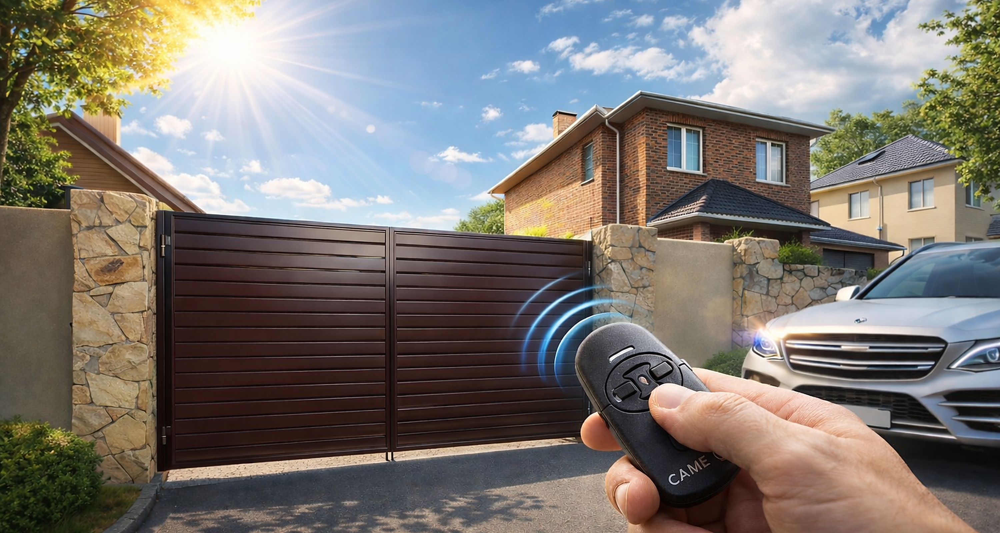

Шаг 1
Частный дом и участок
Тёплый жилой масштаб, спокойный фасад, ворота как часть общей сцены дома.
Ворота, заборы и порошковая покраска
POKRASKA.STORE
+7 (937) 615-46-29
Пн-Пт 8:00-18:00, Сб 9:00-14:00
+7 (962) 554-22-60
Казань, Старое Победилово, ул. Садовая, 72

Производство и монтаж под ключ
Автоматические ворота в Казани с установкой по доступным ценам
Изготовление металлоконструкций
- Полимерно-порошковая покраска
- Пескоструйная обработка (с выездом)
Выезд замерщика бесплатно
Доставка по Казани и области
Установка под ключ
Не больше карточек. Больше чувства масштаба, света и уверенного материала.
Рост масштаба
Кинетическая сцена
От ворот частного дома к фасаду улицы и уровню большого проекта
Это та самая фишка, которая может стать вашей. Не буквальная копия чужого приёма, а свой фирменный переход: работа растёт в масштабе, а стиль остаётся единым.
Частный участок
Посёлок и фасад
Коммерческий объект
Фирменный ход
Дом → улица → объект
Именно эта линия даёт странице характер и отделяет её от обычного каталога с карточками.

Каталог
Сцена 1
Ворота, калитки и заборы как единый образ защищённого и дорогого дома
Вместо дробного каталожного ощущения здесь один мощный блок: фасад, линия забора, материал и спокойный маршрут в нужный раздел.
Один визуальный центр
Внимание собирается в одну картину, а не рассыпается по деталям.
Только нужные акценты
Пара сильных мыслей работает лучше, чем длинный перечень одинаковых выгод.

Покраска
Сцена 2
Порошковая покраска как чистая технологичная сервисная сцена
Покраска уже не дополнение, а самостоятельная часть бренда. Светлая подача, точность и ощущение серьёзного производства.
Услуга выглядит серьёзнее
Подача уже не как у подпункта, а как у самостоятельного направления.
Светлая сцена добавляет контраст
После тёмного блока она даёт воздуху появиться снова и усиливает ритм всей страницы.
Финал
Что это меняет
Сайт начинает выглядеть не просто аккуратнее, а самостоятельнее
Он уже не напоминает ещё один лендинг про ворота, а начинает работать как узнаваемая фирменная сцена: металл, свет, масштаб и уверенная структура.